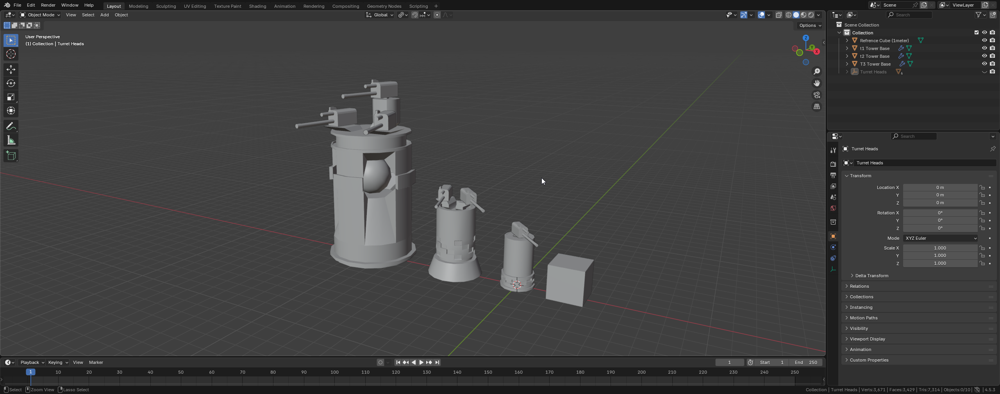

Swapper Tower System is an Innovative way to play tower defense. It allows for both engaging gameplay and strategic play when using this special system in tower defense.
Swapper Tower System (STS) is a tower defense system designed to make the average tower defense experience more engaging. The way it works is by allowing the player to buy a Tower Base and a Tower Weapon that can be placed on top of the tower. This Tower Base can have up to 3 weapons on it. This also allows for the second part of the system. Tower Weapons can interact with each other to make combinations that do more damage or have special effects when used manually or automatically by the tower itself.

Figure 1: Swapper Tower System models rendered in Blender.